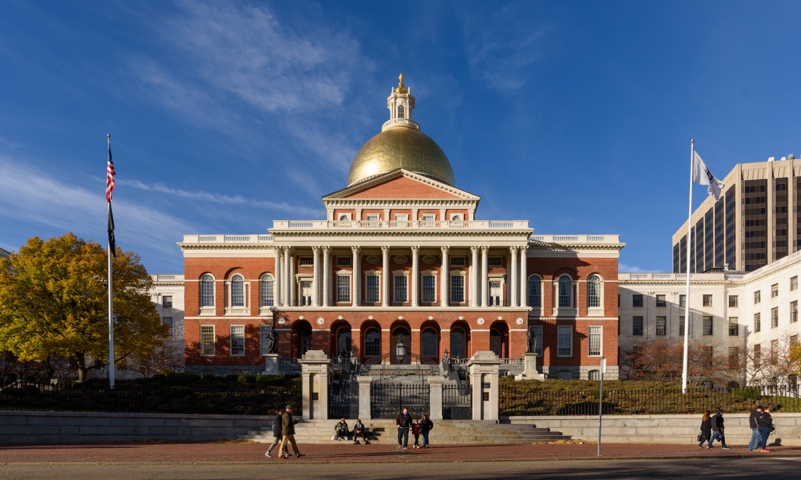
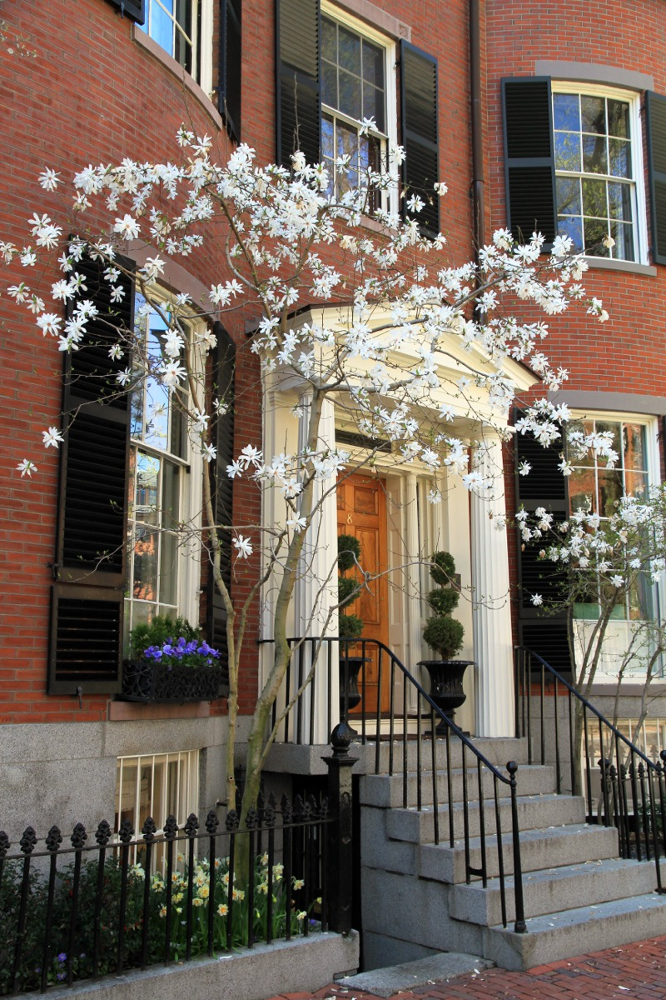
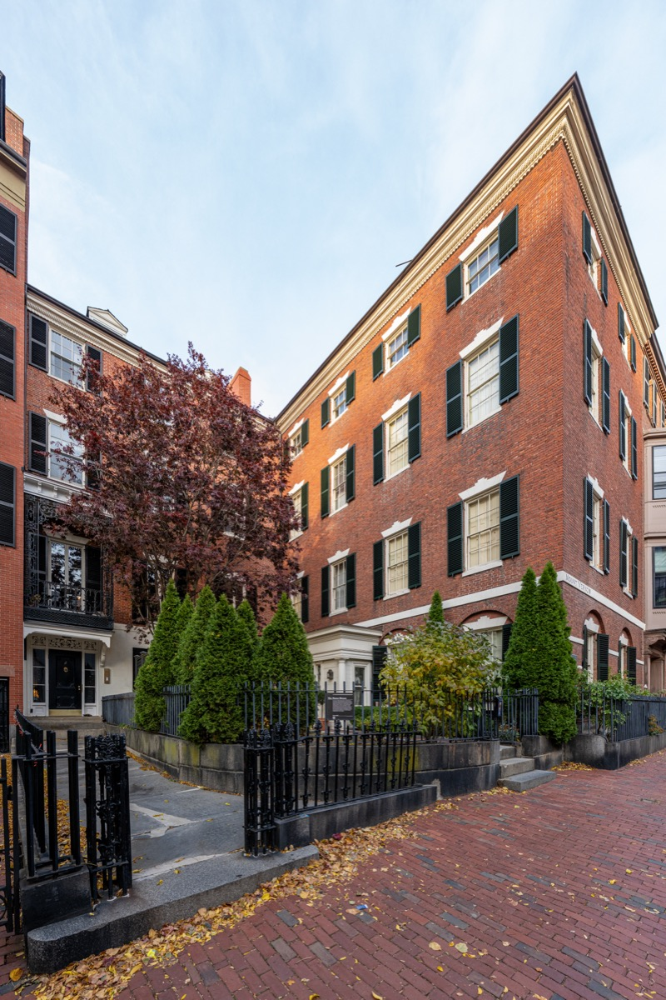
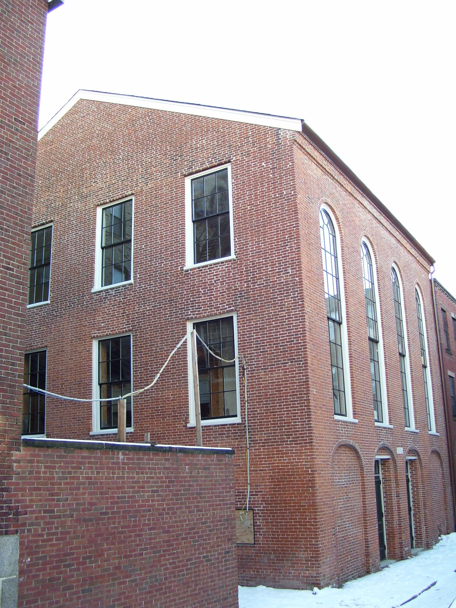
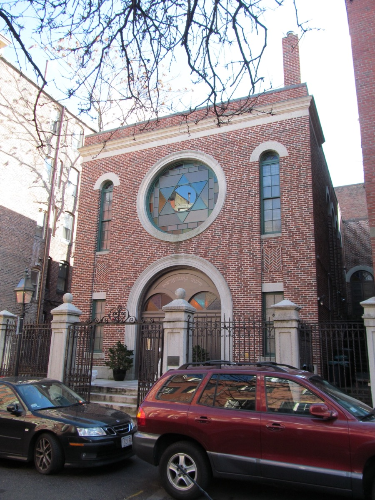
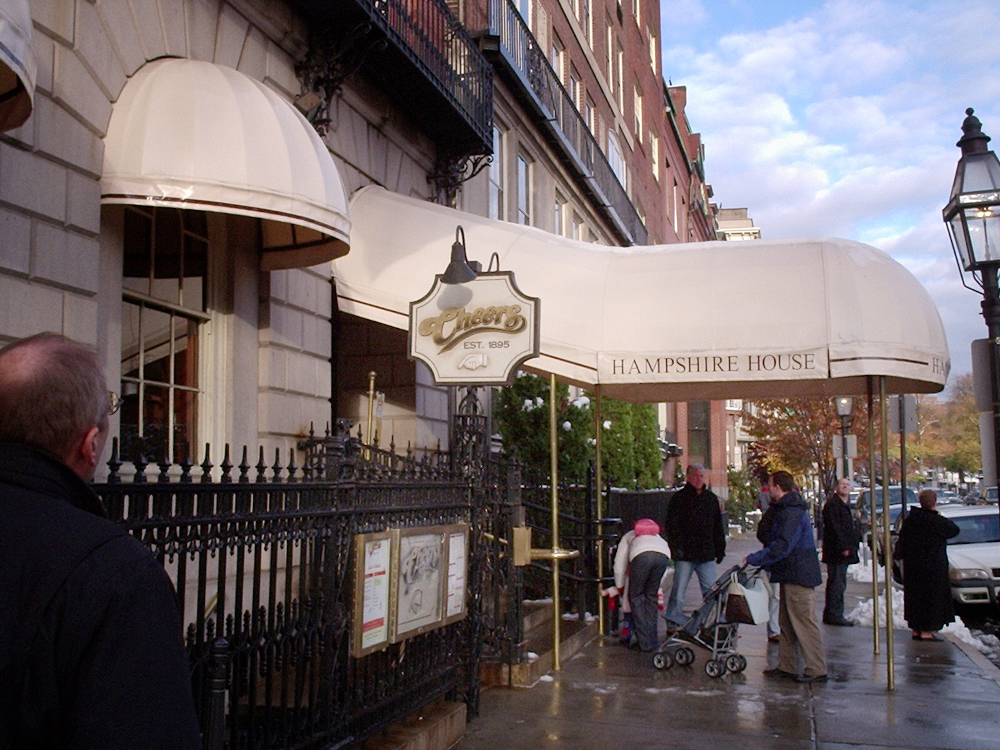

Beacon Hill is the neighborhood people picture when they picture Boston: brick sidewalks that tilt, black shutters, window boxes, purple-tinted glass, and about a thousand gas lamps that stay lit day and night. It is also more than a postcard: the north slope was the center of Boston's free Black community for most of the 1800s.
This guide covers the best things to do, where to eat and shop on Charles Street, the Black Heritage Trail, and practical tips for a first visit.
The short answer
The 10 best things to do in Beacon Hill
01 · Sights
The best things to do in Beacon Hill
Start at the top by the State House and work downhill to Charles Street and the river.
The Massachusetts State House

Bulfinch's 1798 State House with the gold-leaf dome. Free 40-minute tours from Doric Hall take in the Sacred Cod and the Hall of Flags.
Acorn Street

One block of rough cobblestones between 1820s brick houses. The most photographed street in Boston. Go before 8am if you want it empty.
Louisburg Square and Mount Vernon Street

Boston's most expensive address: a fenced private park ringed by 1830s bowfront houses. Louisa May Alcott died at number 10.
The Nichols House Museum

An 1804 Bulfinch house left exactly as its last owner, Rose Standish Nichols, kept it. The only house on the hill you can go inside.
The Museum of African American History

The 1806 African Meeting House and 1835 Abiel Smith School, the anchor of the Black Heritage Trail. Frederick Douglass spoke here.
The Vilna Shul

A 1919 immigrant synagogue, the last surviving one in downtown Boston, restored with original folk-painted murals uncovered.
The Longfellow Bridge

The "salt and pepper shaker" bridge over the Charles. Esplanade and Back Bay skyline on one side, the Zakim Bridge on the other.
Cheers, the Bull & Finch Pub

The exterior used in the show's opening credits since 1969. The interior was never the set; there's a replica upstairs. Photo, not dinner.
02 · Food & shop
Charles Street: where to eat and shop
Six blocks between the Public Garden and Cambridge Street, no chains beyond a couple of coffee shops.
How to walk Charles Street
Start at the Public Garden end and walk north; a dozen antique shops, a century-old hardware store, two bookstores and Julia Child's butcher.
The Paramount
A neighborhood diner since 1937: order at the counter, carry your plate, no sitting until you have food. Pancakes, omelets, French toast.
Tatte in the Charles Street Meeting House

The Beacon Hill branch sits in an 1807 brick church that hosted abolitionist speakers. Pistachio croissant, shakshuka, corner tables.
Toscano, 75 Chestnut and Grotto
Toscano is the hill's Tuscan standby; 75 Chestnut is dark wood with Sunday jazz brunch; Grotto's basement prix fixe is a top value.
The Sevens
The bar locals mean when they say the bar on Charles Street. Dark, narrow, a dartboard, no interest in Cheers being three blocks away.
Beacon Hill Books, Blackstone's and Savenor's
A five-story bookstore with a model train and a garden café, the neighborhood gift shop, and the butcher where Julia Child shopped.
03 · Black Heritage Trail
The Black Heritage Trail
A 1.6-mile walk through the north slope, where Boston's free Black community organized and hid fugitives from slavery.
Shaw and 54th Regiment Memorial
Saint-Gaudens's 1897 bronze of the first Black regiment raised in the North during the Civil War. The trail starts here.
George Middleton House
Built 1797 by a Black Revolutionary War veteran, the oldest surviving home on the hill built by a Black owner.
Lewis and Harriet Hayden House
An Underground Railroad safe house; the Haydens reportedly kept gunpowder in the basement to deter slave catchers.
Smith Court residences
Five homes of Black families from the 1800s, one of the oldest surviving clusters in the country.
African Meeting House
1806; the oldest surviving Black church building in the US. Garrison founded the New England Anti-Slavery Society here in 1832. The trail ends here.
The National Park Service runs free ranger-led walks of the full trail, usually daily in summer, starting from the Shaw Memorial.
04 · History
Three hills to one
Boston was founded in 1630 on a peninsula whose main feature was a ridge of three peaks the settlers called the Trimountaine. In 1795 a group called the Mount Vernon Proprietors, with Charles Bulfinch as architect, bought the pasture and started to develop it. To make the land buildable, they cut the hill down by about sixty feet, using one of the first railways in America to dump earth into the mill pond to the north.
The gas lamps are a leftover of that era, not a restoration: they were never removed, and they burn continuously because lighting and extinguishing them daily costs more than the gas. The purple windows on Beacon and Chestnut Streets are a manufacturing defect: English glass from around 1820 turned violet in sunlight because of manganese in the mix.
In 1955 Beacon Hill became the first historic district in Massachusetts. The West End next door, which had none of that protection, was leveled by urban renewal between 1958 and 1960.
05 · Side streets
Side streets and hidden corners
Chestnut Street: the prettiest street on the hill, Bulfinch houses and purple window panes, quieter than Mount Vernon.
Pinckney Street: the ridge dividing the south slope's mansions from the north slope's working neighborhood.
Rollins Place and Cedar Lane Way: a false-front Greek Revival portico hiding a cliff, and a cobbled alley almost nobody knows.
The Sunflower Castle: at 130 Mount Vernon St, a Queen Anne house with a large sunflower motif, looking like Amsterdam.
The Boston Athenaeum: an 1807 membership library at 10½ Beacon St, first-floor gallery open to visitors.
06 · The Common, Garden & river
The Common, the Public Garden and the river
Boston Common, along Beacon Street, is the oldest public park in the country (1634). The Public Garden, across Charles Street, has the lagoon, swan boats and the Make Way for Ducklings bronzes. On the river side, footbridges cross Storrow Drive to the Esplanade, with Community Boating's docks and the Longfellow Bridge right there.
07 · Events
Beacon Hill events through the year
The Beacon Hill Hidden Gardens Tour, third Thursday in May, opens private walled gardens for one day. Halloween on Beacon Hill closes Chestnut, West Cedar and Mount Vernon to traffic and fills them with costumed crowds.
December brings wreaths on every door and Christmas Eve carolers walking from Louisburg Square. Duckling Day on Mother's Day sends children dressed as ducklings from the Common to the Garden.
08 · Tips
Tips for a first visit
Go early. Before 9am the streets are empty and Acorn Street is yours.
Wear real shoes. The sidewalks are brick, uneven and steep.
Do the State House on a weekday. It is closed weekends.
Remember people live here. Every photogenic doorway is somebody's front door.
Do the north slope too. The Black Heritage Trail and the Vilna Shul are the most substantial history on the hill.
FAQ
Beacon Hill Boston: common questions
What is Beacon Hill in Boston known for?
Boston's best-preserved historic neighborhood: steep brick streets, Federal-style row houses from the early 1800s, working gas lamps, the cobblestones of Acorn Street, the gold-domed State House, Louisburg Square, and the antique shops and cafés of Charles Street. It was also the center of Boston's free Black community in the 1800s, which the Black Heritage Trail follows.
How do you get to Beacon Hill?
Park Street (Red and Green Lines) puts you at the foot of the State House; Charles/MGH (Red Line) puts you at the bottom of Charles Street; Arlington (Green Line) is a short walk across the Public Garden; Bowdoin (Blue Line) is behind the State House. Do not drive; there is almost no parking.
Where is Acorn Street and can you walk on it?
Acorn Street is one block long, between West Cedar Street and Willow Street. It is a public street, but residential, so keep voices down and stay off doorsteps. Early morning is the only time it is empty.
Is the State House free to visit?
Yes. Open to the public on weekdays, with free guided tours roughly 10am to 3:30pm. Bring photo ID for security.
How long do you need for Beacon Hill?
Ninety minutes covers a loop of Charles Street, Acorn Street, Louisburg Square and the State House exterior. Half a day adds the State House tour and a house museum.
Is the Cheers bar in Beacon Hill the one from the show?
Partly. The exterior was used in the opening credits, but the interior was a Los Angeles studio set. There is a replica upstairs. Go for the photo, not the dinner.